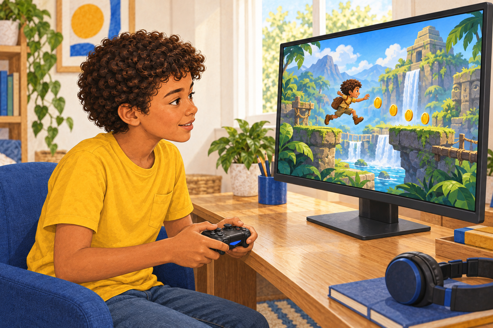
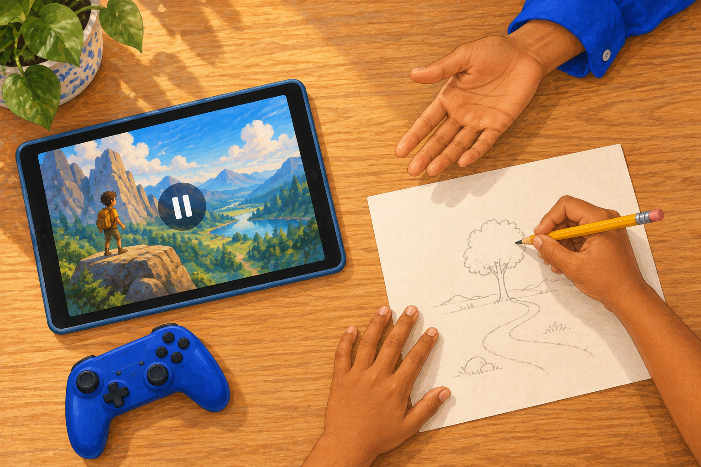
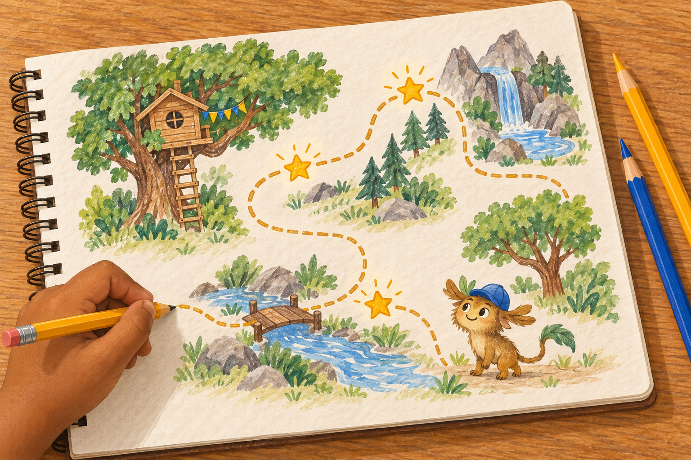
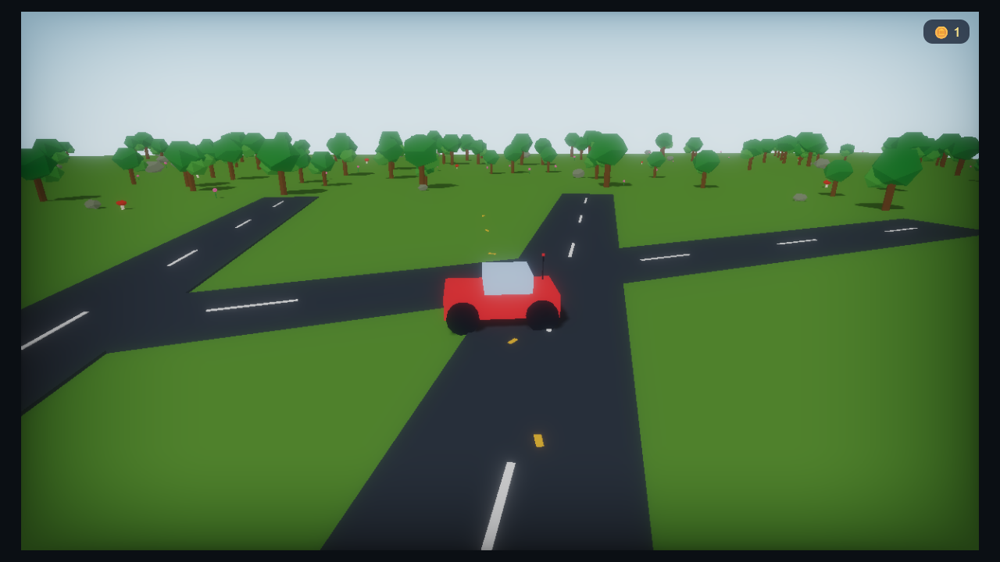
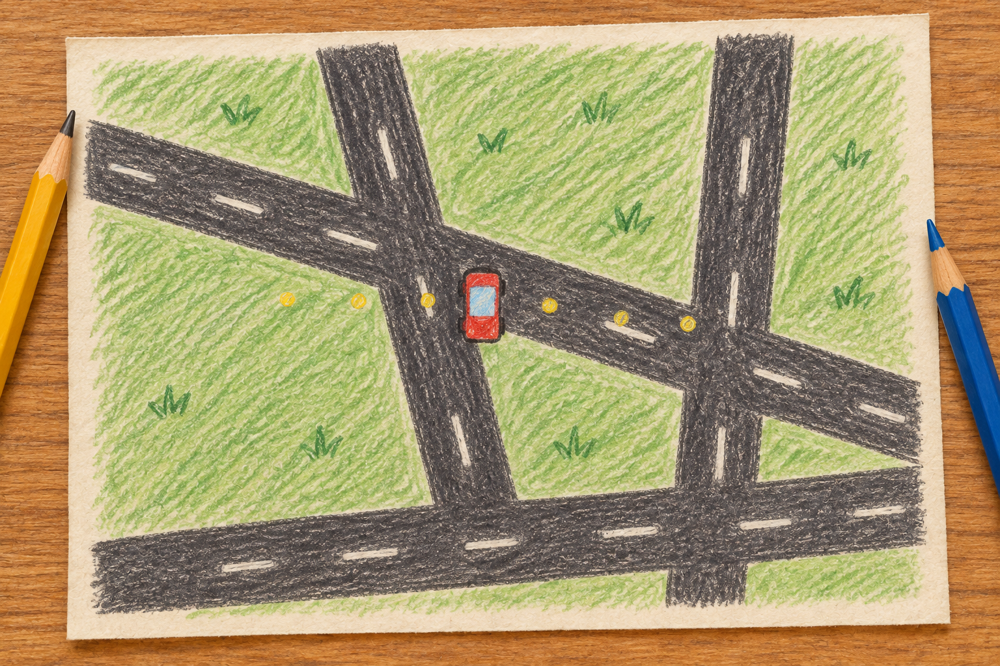
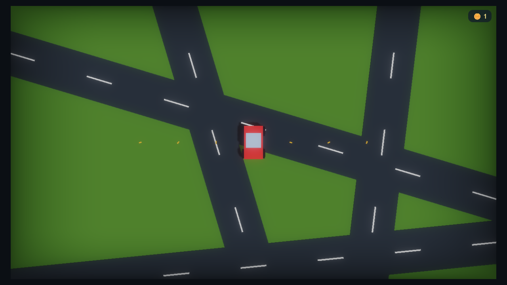
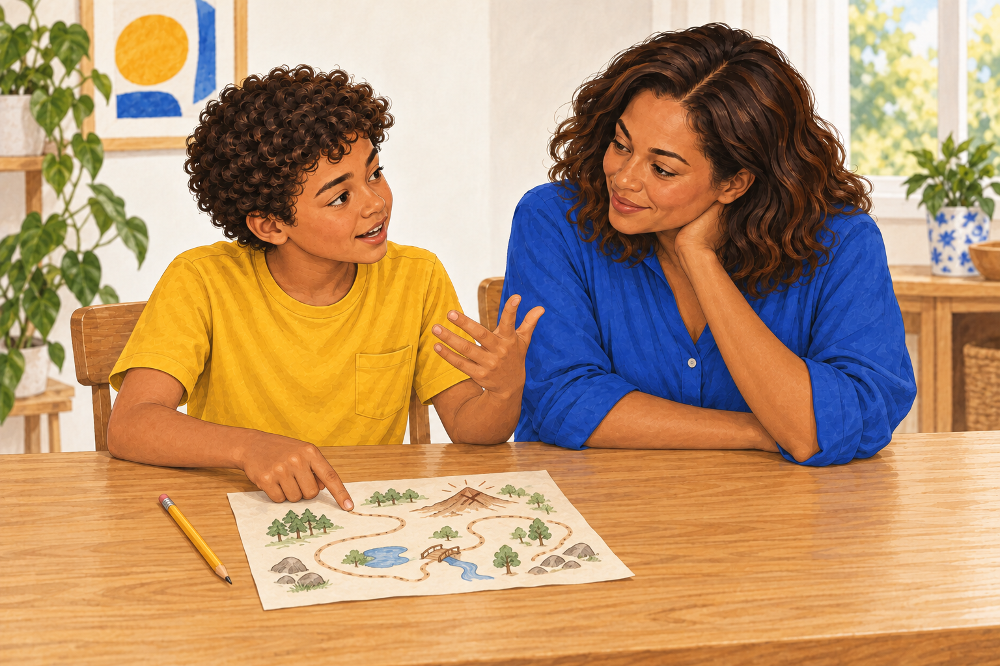

Seu filho sabe tudo
sobre o
jogo dos outros.
Ele conhece personagens, mapas e atalhos.
Uma dessas preferências pode virar uma ideia dele.

Ele conhece personagens, mapas e atalhos.
Uma dessas preferências pode virar uma ideia dele.


Mas vale abrir espaço para uma pergunta:
“O que você gostaria
de fazer do seu jeito?”

A ideia pode começar pequena.

Montar e testar mostra
se a ideia funciona.


“Esse caminho
fui eu que fiz”.

Siga o perfil
para conhecer esse caminho.